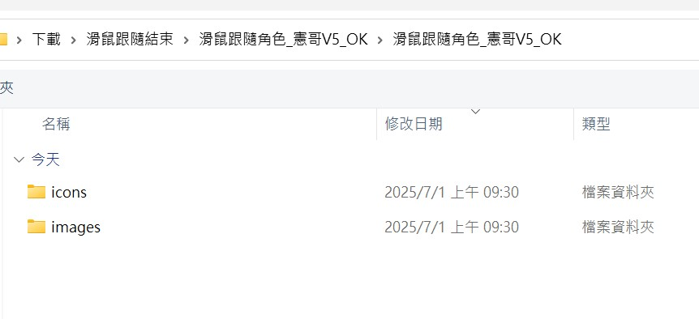
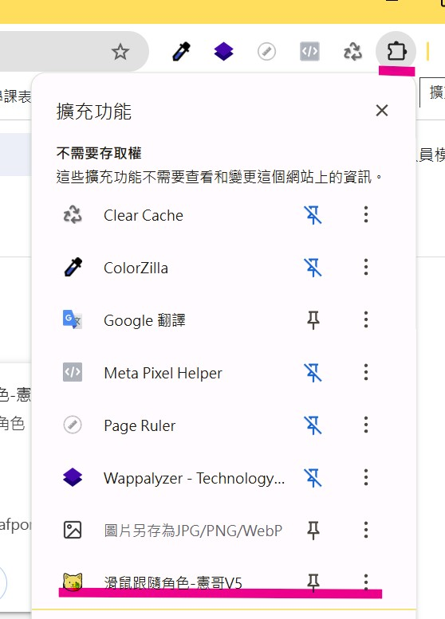
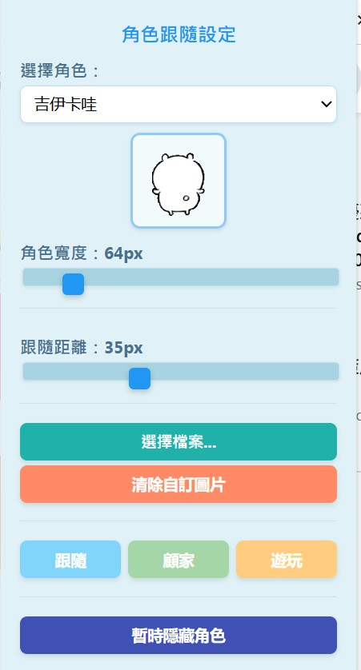

一、安裝「桌面寵物」擴充功能
歡迎使用「桌面寵物V5」Chrome 擴充功能！這是一款能在您瀏覽網頁時，為您的 Chrome 瀏覽器帶來可愛互動角色的擴充功能。由於此擴充功能目前尚未上架 Chrome 線上應用程式商店，您需要透過「開發人員模式」手動載入。請依照以下步驟進行安裝：
最新檔案下載⬇️
-
下載擴充功能檔案：
請確保您已取得擴充功能的壓縮檔（例如：
滑鼠跟隨角色_憲哥V5_OK.zip）。將其解壓縮到您電腦中一個不會隨意移動的資料夾（例如：D:\ChromeExtensions\DesktopPet）。請記住這個資料夾的路徑，因為它不能被刪除或移動。 -
開啟 Chrome 瀏覽器：
啟動您的 Google Chrome 瀏覽器。
-
進入擴充功能管理頁面：
在 Chrome 瀏覽器中，您可以透過以下任一方式進入擴充功能管理頁面：
- 在網址列輸入
chrome://extensions並按下 Enter 鍵。 - 點擊瀏覽器右上角的 三點選單 (⋮) → 選擇 擴充功能 → 管理擴充功能 。
- 在網址列輸入
-
開啟「開發人員模式」：
在擴充功能管理頁面中，找到右上角的 開發人員模式 (Developer mode) 開關，將其打開。開關開啟後，您會看到頁面左邊頂部出現「載入未封裝項目」、「打包擴充功能」和「更新」等按鈕。
💡 提示：開發人員模式通常位於頁面右上角。
-
載入未封裝擴充功能：
點擊「開發人員模式」下方的 載入未封裝項目 (Load unpacked) 按鈕。
-
選擇擴充功能資料夾：
在彈出的檔案選擇視窗中，瀏覽並選擇您在步驟 1 中解壓縮的擴充功能資料夾（例如：
D:\Mouse-BuddyV5.zip\滑鼠跟隨角色_憲哥V5_OK）。點擊「選取資料夾」或「開啟」。※這裡請注意，在選取資料夾時可能有多層，要確保看到 icon 、images資料夾 代表到達根目錄，才能正確安裝
 -
完成安裝：
如果一切順利，您將會看到「桌面寵物」擴充功能的圖示出現在您的擴充功能列表中，表示安裝成功。
若安裝完開啟頁面沒有出現，請嘗試重新整理
開啟選單方式請按瀏覽器上方插件功能(一個拼圖的圖案)，可以將插件釘選方便切換模式，其他說明請看功能與特色
❗ 重要提示：
- 請勿刪除或移動擴充功能資料夾。 只要您開啟 Chrome 瀏覽器，這個擴充功能就會自動啟動。如果您刪除或移動了資料夾，擴充功能將會失效，需要重新載入。
- 在「開發人員模式」下安裝的擴充功能，每次開啟 Chrome 時可能會出現「停用開發人員模式擴充功能」的提示。這是正常現象，您可以選擇保留啟用，不影響使用。
二、核心功能與特色
憲哥版「桌面寵物」擴充功能為您的瀏覽體驗帶來以下獨特功能：
1. 多樣化角色選擇：
- 擴充功能內建多款可愛角色供您選擇，每款都獨具特色。
- 自訂圖片功能： 您可以上傳自己喜歡的 GIF 或 PNG 圖片作為桌面寵物，讓您的瀏覽器充滿個人風格！(大小需500KB以下)
2. 三種互動模式，滿足您的不同心情：
顧家模式 (Home Mode)：
- 角色位置固定： 角色會待在您設定的固定位置（預設在右下角），不隨滑鼠移動。
- 可拖曳移動： 您可以用滑鼠拖曳角色到頁面上的任何位置。下次開啟 Chrome 或頁面時，它會自動回到您上次放置的位置。
- 點擊互動： 在顧家模式下，點擊角色會讓它輕微跳動並「長大」，並且有特殊互動彩蛋！
- 靜止彈跳： 角色在靜止時會不時地輕微彈跳，增加活潑感。
跟隨模式 (Follow Mode)：
- 滑鼠跟隨： 角色會緊緊跟隨您的滑鼠游標移動。
- 閒置彈跳： 當滑鼠靜止不動一小段時間後，角色會輕微彈跳，提醒它的存在。
- 跟隨距離調整： 您可以在擴充功能的設定中調整角色與滑鼠之間的跟隨距離，讓它更貼近或保持一定間隔。不影響你閱讀
遊玩模式 (Play Mode)：
- 頁面遊走： 角色會在瀏覽器頁面中隨機地四處移動、跳躍，就像個調皮的孩子。
- 趣味動作： 角色在移動過程中可能會隨機觸發一些有趣的動作，例如旋轉、暫時消失再出現等。
- 點擊互動： 在遊玩模式下，如果點的到他也可以觸發有趣彩蛋。
3. 角色尺寸調整：
- 您可以根據自己的喜好，在擴充功能設定中調整角色的顯示寬度，高度會自動等比例縮放，確保圖片不變形。
4. 隱藏/顯示功能(列印隱藏)：
- 如果您臨時不想看到桌面寵物，可以在擴充功能設定中快速將其隱藏。需要時也可以隨時再次顯示。
- 友善列印： 在您進行網頁列印時，角色會自動暫時隱藏，避免干擾列印內容。列印完成後，角色會自動恢復顯示。，請注意這功能在某些網頁可能會失效，就必須手動隱藏
三、如何設定與使用
-
開啟擴充功能彈出視窗：
點擊瀏覽器右上角的「桌面寵物」擴充功能圖示。這將會打開擴充功能的設定彈出視窗。
-
選擇角色：
在彈出視窗中，您可以選擇內建角色或上傳自訂圖片。
-
調整尺寸與跟隨距離：
- 拖動「角色大小」滑桿來調整角色的顯示寬度。
- 在「跟隨距離」輸入框中調整跟隨模式下角色與滑鼠的距離。
-
切換模式：
點擊「模式選擇」區域的按鈕，即可在「顧家模式」、「跟隨模式」和「遊玩模式」之間自由切換。
-
隱藏/顯示角色：
點擊「隱藏角色」或「顯示角色」按鈕來控制角色的可見性。
結語
「桌面寵物」擴充功能旨在為您的瀏覽器體驗注入更多生氣與樂趣。我們將持續優化並添加更多功能。如果您在使用過程中遇到任何問題或有任何建議，歡迎隨時提供回饋！